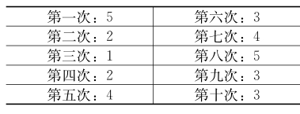

34 让你在赌场不再输钱
数学概念：赌徒谬误
你喜欢赌博吗？如果喜欢，你可能接触过一个数学概念———赌徒谬误，但却浑然不知。
以掷骰子为例，每个骰子有六个数字———1，2，3，4，5，6，所以，掷一下，每个数字出现的概率都是1／6。假设你掷了10次，掷出的结果如下：

人们总是以为，因为6还没出现，所以下次出现6的概率会更大，可能会是前面10次的3倍。“我还没掷出6，”有的人可能这么想，“所以下次一定会是6，掷吧。”但实际上，下次是6的概率和第一次没什么差别。这一谬误的错误之处在于，认为前面的结果会影响未来的结果。事实上，即使掷100次，而没有一次是6，第101次是6的概率依然是1／6。
赌徒谬误也被称为蒙特卡洛谬误，可能来自1913年8月某个晚上的蒙特卡洛赌场。那天晚上，轮盘连续出现了26次黑色，在为决定命运的第27次下注时，越来越多的赌徒下了红色，因为他们相信红色出现的概率更大。毫无疑问，出现黑色或红色的概率并不会因为一次旋转而改变，只要考虑到概率，就知道每次旋转都是靠运气。
有时，数学家和统计学家将赌徒谬误定义为，相信轮盘和骰子这种无生命之物有记忆，也就是说，它们“知道”自己过去的行为，所以会相应调整未来的行为。显然，这些东西并没有记忆，轮盘的每次旋转和骰子的每次投掷都是相互独立的（假设设备没有被篡改）。所以，决定下注的时候，千万记住这一点。
谬误
另一个谬误是人身攻击论证，即把一个人的人格当成支持或反对某一观点的证据，而事实上，一个人的人格与这个观点的真值毫无关系。假设你和另一个人在就死刑展开辩论，都在试图说服一个共同的朋友自己的观点是正确的，同时假设你的辩论对手最近欺骗了他的妻子，如果你对你们的朋友说：“不要管他的观点，他出过轨”，这就是人身攻击论证。对手的私生活与他的观点正确与否毫无关系。